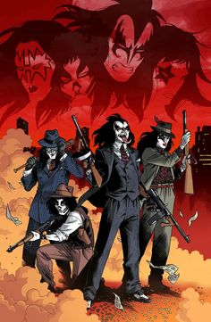

KISS es una banda de rock estadounidense formada en 1973 en Nueva York por Paul Stanley (voz y guitarra r tmica) y Gene Simmons (bajo y voz), junto con Ace Frehley (guitarra l der) y Peter Criss (bater a). Son conocidos por su imagen ic nica: maquillaje extravagante, vestuario teatral y espect culos con fuegos artificiales, sangre falsa y pirotecnia. Musicalmente, KISS combina hard rock, glam rock y heavy metal, con letras pegadizas y coros picos. Su imagen y puesta en escena ayudaron a definir el estilo de muchas bandas de rock posteriores. Su punto m ximo de popularidad fue en los a os 70 y 80, con discos como Destroyer y Love Gun. Aunque han tenido varios cambios de formaci n, Paul Stanley y Gene Simmons han sido los miembros constantes. KISS ha vendido m s de 100 millones de discos en todo el mundo y sigue siendo una de las bandas m s influyentes del rock. Se retiraron oficialmente en 2023 con su gira End of the Road Tour, pero anunciaron que su legado continuar con versiones digitales de la banda en el metaverso. |
| 
|